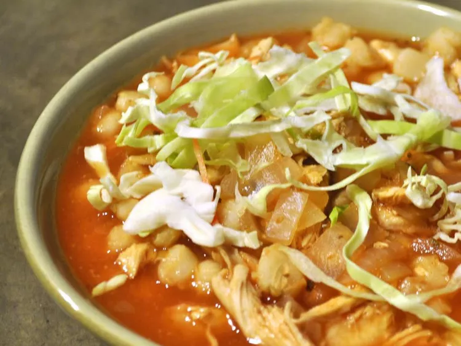

New England Clam Chowder

Traditional New Mexican spicy stew. Red chile and pork come together with
hominy to warm your belly and your palate. Serve with tortillas or corn
bread.
List of items
- chile peppers
- olive oil
- onion
- boneless pork lion
- 1 can of white and yellow hominy
- chicken broth
- water
- cumin
- chili powder
- salt
- ground black pepper